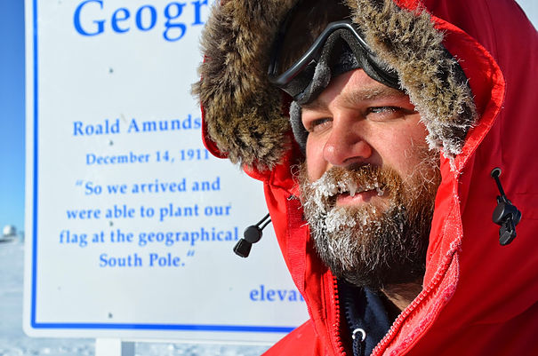

About me
 My name is James Casey. I finished my PhD in Physics at Georgia Tech in 2015. My research was focused on neutrinos generated in gamma ray bursts. I love science and have many hobbies that I hope to be able to continue to participate in as time goes on. I also hope to blog about and explore these on my blog. Below you can find links to pages dedicated to some of these hobbies. The link to my blog can be found above in the menu bar.
I am working to increase my activity in social media, so feel free to contact me. My contact information is on my Contact Me page.